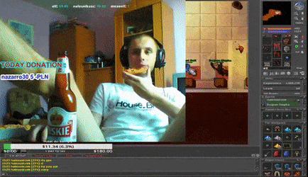

 W maju 1995 roku przez Brendan Eich. Gdyż jest zapojektowany z myślą o interakcji z urzytkownikiem i jest podobny do języka angielskiego Jest wykorzystywan w kliencie. Jest bezpieczny gdyż skrypty nie wpowadzają zmian do maszny klienta podczas pracy. Jest językiem obiktowym ponieważ wykożystuje on klasy
Tworzy przcisk z napisem Nowa Strona, który po wciśnięciu otwiera nowe okno. Otwiera okno o nazwie obraz.html , z monizej wymienionymi proporcjami okna (280 x 160). "toolbar=no" - toolbar to pasek z zadaniami służącymi o cofania otwirania i zamykania sony "directories=no" - directories to ustawieniedotyczące wyświelania osobistego paska nażędzi "menubar=no" - menubar to pasek menu, który za pomocą tej komendy może zostać wyłączony "height=280" - ustawia wysokość obrazka na 280 "weidth=160" - ustawia szerokośc obrazka na 160 "top=200" - ustawia pozycje obrazka 200 względem góru ekranu "left=200" - ustawia pozycje obrazka na 200 względem lewej srony zamyka dotchczasowe okno przeglądarki.